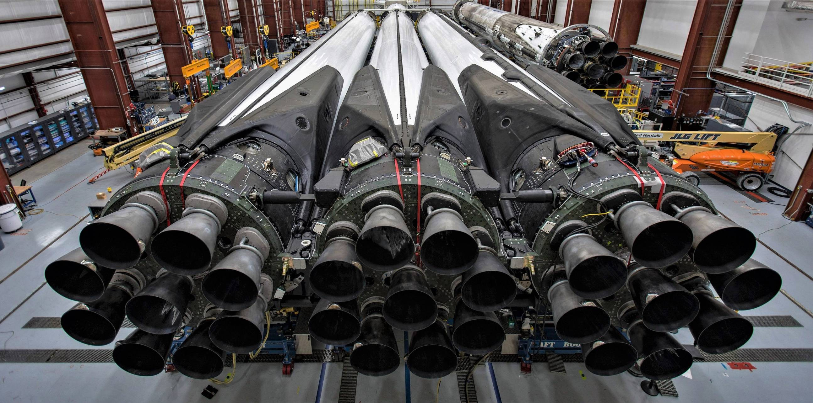

Falcon Heavy is the most powerful operational rocket in the world by a factor of two. With the ability to lift into orbit nearly 64 metric tons (141,000 lb)---a mass greater than a 737 jetliner loaded with passengers, crew, luggage and fuel--Falcon Heavy can lift more than twice the payload of the next closest operational vehicle, the Delta IV Heavy, at one-third the cost. Falcon Heavy draws upon the proven heritage and reliability of Falcon 9.
Its first stage is composed of three Falcon 9 nine-engine cores whose 27 Merlin engines together generate more than 5 million pounds of thrust at liftoff, equal to approximately eighteen 747 aircraft. Only the Saturn V moon rocket, last flown in 1973, delivered more payload to orbit. Falcon Heavy was designed from the outset to carry humans into space and restores the possibility of flying missions with crew to the Moon or Mars.
Falcon Heavy missions can deliver large payloads to orbit inside a specially made composite fairing, or the rocket can also carry the Dragon spacecraft. It can do these deliveries for an amazingly low cost.
Dragon carries cargo in the spacecraft’s pressurized capsule and unpressurized trunk, which can also accommodate secondary payloads. In the future, Dragon will carry astronauts in the pressurized capsule as well.
The composite payload fairing protects satellites during delivery to destinations in low Earth orbit (LEO), geosynchronous transfer orbit (GTO) and beyond.
Three cores make up the first stage of Falcon Heavy. The side cores, or boosters, are connected at the base and at the top of the center core’s liquid oxygen tank. The three cores, with a total of 27 Merlin engines, generate 22,819 kilonewtons (5.13 million pounds) of thrust at liftoff. Shortly after liftoff the center core engines are throttled down. After the side cores separate, the center core engines throttle back up to full thrust.
Falcon Heavy draws upon Falcon 9’s proven design, which minimizes stage separation events and maximizes reliability. The second-stage Merlin engine, identical to its counterpart on Falcon 9, delivers the rocket’s payload to orbit after the main engines cut off and the first-stage cores separate. The engine can be restarted multiple times to place payloads into a variety of orbits including low Earth, geosynchronous transfer orbit (GTO) and geosynchronous orbit (GSO).
Each of Falcon Heavy’s side cores, or boosters, is equivalent to the first stage of a Falcon 9 rocket with nine Merlin engines. At liftoff, the boosters and the center core all operate at full thrust. Shortly after liftoff, the center core engines are throttled down. After the side cores separate, the center core engines throttle back up.
Inside each of Falcon Heavy’s three cores is a cluster of nine Merlin engines. These same engines power Falcon 9, enabling efficiencies that make Falcon Heavy the most cost-effective heavy-lift launch vehicle in the world. With a total of 27 first-stage engines, Falcon Heavy has engine-out capability that no other launch vehicle can match—under most payload scenarios, it can sustain more than one unplanned engine shutdown at any point in flight and still successfully complete its mission.
